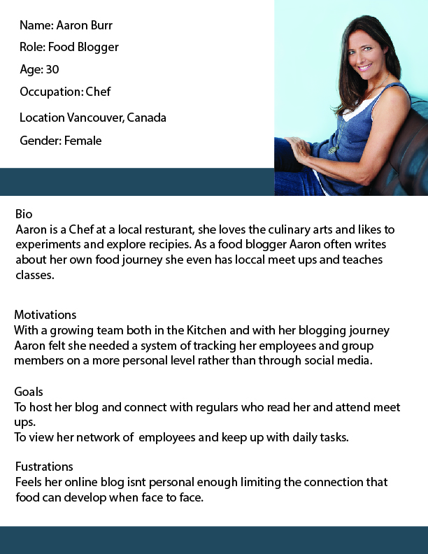
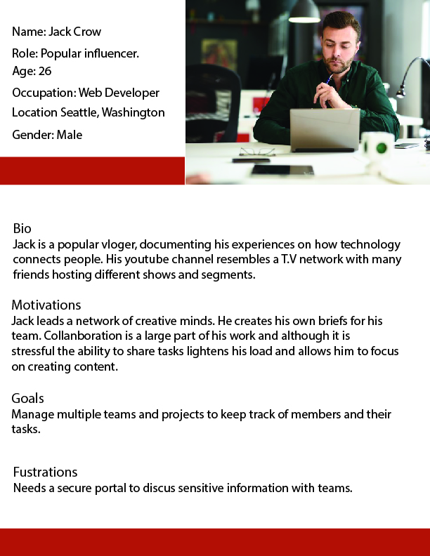
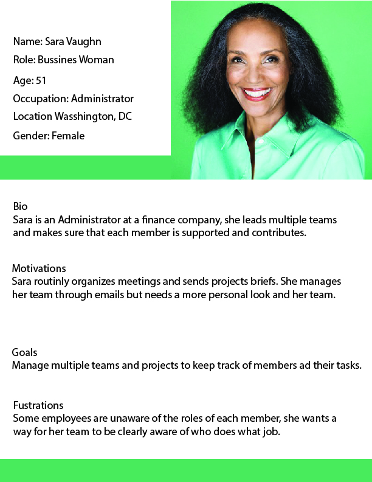
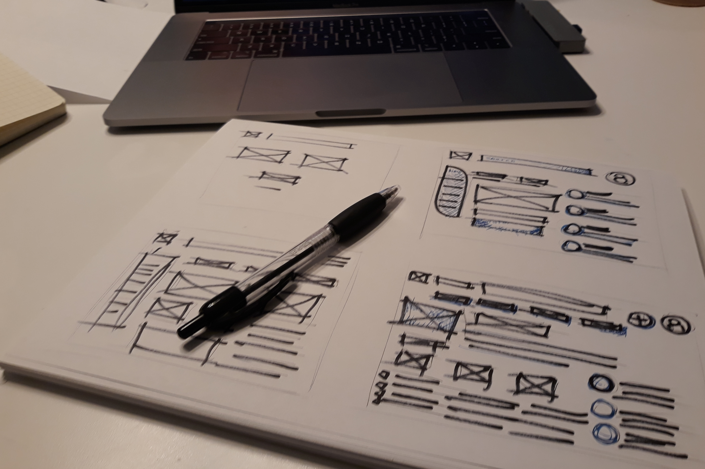
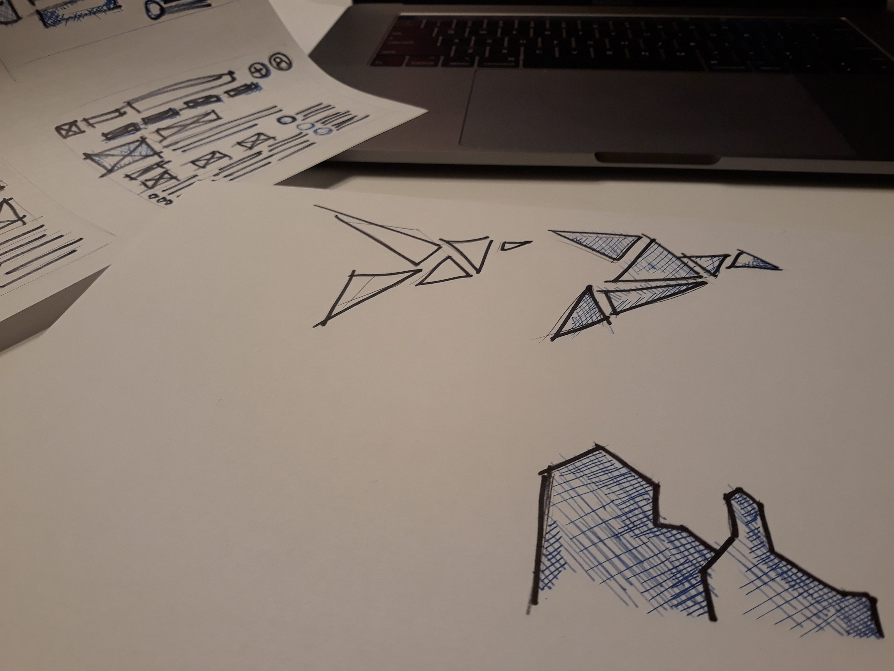
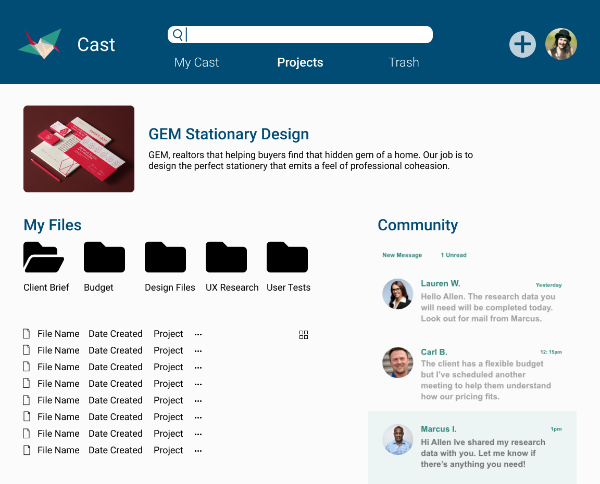
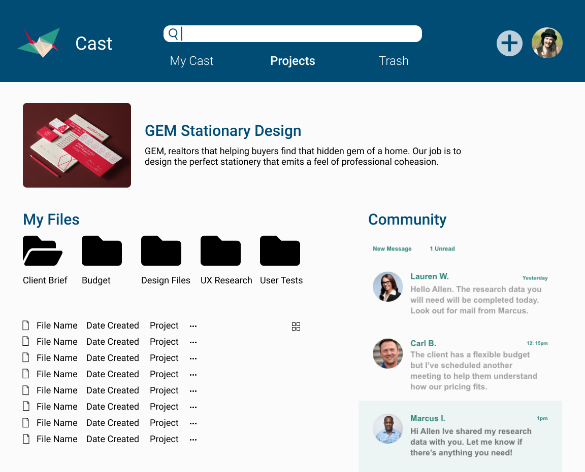

Cloud Storage is a young market that offers many possibilities even with the large brands in the space. Our client needed a brand strategy and clear vision for a cloud storage application with a focus on the networking and collaboration.
Problem
Our client knows that the move to cloud storage is right for them, but they do not have a clear vision for their product. They have several unknown variables such as mobile or web, branding or their target audience. They do know that the app should focus on collaborative features.
Solution
Collaboration was key. So from the features down to the brand name and imagery groups were the main selling point. Cast meaning a group of birds. Birdlike images flock through the design and the Tangram theme showcases the idea that users are pieces of a whole. We've included personal, shared cloud storage as well as the ability to create projects that reside on a shared storage space. Users can edit documents simultaneously.
Process
As the designer I lead the development of a design that was in scope and met, then exceeded client expectations.
Each stage of the design process lead me confidently to the final design. Every step was cross examined with the client brief in order to stay on task. Through user testing I was able to make slight changes in order to catch the nuances of user needs that could not be understood through the client brief alone. And one round of testing and competitive analysis lead to major brand updates that have led me to what I believe is a product that meets expectations while delighting users.
Discovery & Reserch
70% of users surveyed stated that they used cloud storage services mainly for professional use. Target audience should include professionals/ businesses.
The highest priority tasks were revealed to be creating content organizing content and sharing content.
Dropbox, Drive, Github, Simple designs that let content lead the design. Key collaborative features that align with user and client needs.
With a direction for the end user and functionality in mind I began mapping a potential solution starting with a flow chart and sketches.



Information Architecture
The many sketches shown are itterations of the layout of the application. This is where i mapped out core stuctures such as the navigation and file system, messaging and projects page.


Branding
As stated earlier, the theme of the design is collaboration. The brand design takes from that core idea.
Name: Cast = Group of birds Tangram = Pieces of a whole.
Initially I felt confident in my choices but after reviewing competitors, User Tests and my own bias; I found that this design was not cohesive. It lacked the unity that the brand was built upon. I decided to discus the direction of this design with my senior designer. After meeting we decided change the logo into an origami shape. This new logo was united while still being comprised of shapes in order to maintain the original theme. The colors were changed in order to calm the image. Blue was then added too create a contrastable background.
Though this assignment I faced many challenges. I overcame setbacks by learning and growing myself as a designer. I learned to discipline my bias as an artist, and to empathize on a deeper level. With this project complete I can take this experience into my next assignment where I will improve my turnaround time and devotion to empathetic design practices.


 
